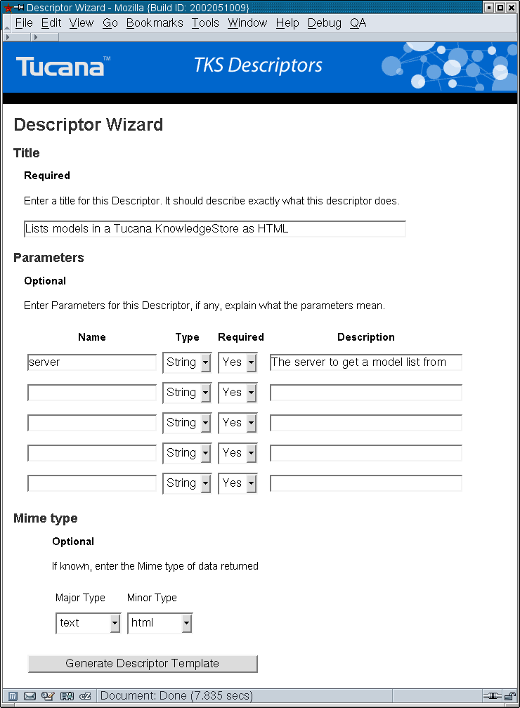
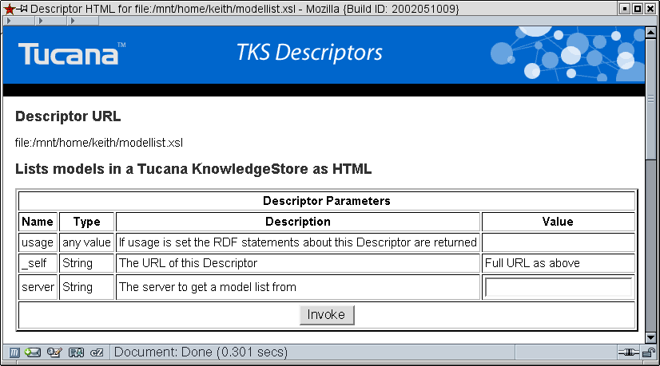
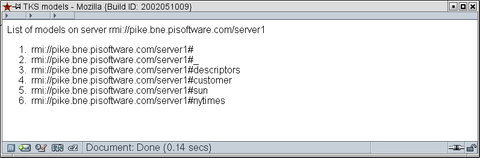

Mulgara Descriptor List Models Tutorial
In this tutorial we will to do the following:- Perform a query inside a descriptor
- Pass parameters to queries
- Transform query results into a form we desired - HTML
NOTE it is assumed the user has already completed the Hello World tutorial, if any steps are unclear refer to that tutorials step for a fuller explanation.
Start the Descriptor Wizard
Click here to open the main Descriptor page. Invoke the Descriptor Wizard which is the first task available in the Descriptor Tasks area.Step 1 - Entering a Title
For this tutorial enter a title such as:Lists models in a Mulgara as HTML.
Step 2 - Entering Parameters
We could hard code this descriptor to only look on a certain Mulgara server but if we supply the server name as a parameter then the descriptor is reusable. Lets use a parameter called 'server' to specify the server, it will be a string.Step 3 - Mime Type
For this example choose text/htmlThe wizard should now look similar to the screen shot below.

Step 4 - Generate the Descriptor Template
Once you have entered all required information (you will be returned to the form entry page if the data is incomplete) click on the 'Generate Descriptor Template' button.Step 5 - Save the Descriptor file
Your Browser should now be showing an XSL file, or it may ask you if you want to download it. In either case save the Descriptor file somewhere where you can edit it. Save it using a filename such as modellist.xsl.Step 6 - Edit the modellist.xsl Descriptor file
Using your preferred text editor load the modellist.xsl and change the main template rule at the top to look like this:<!-- ============================================== -->
<!-- Match the Solution -->
<!-- ============================================== -->
<xsl:template match="/">
<xsl:choose>
<xsl:when test="$_usage">
<xsl:call-template name="usage"/>
</xsl:when>
<xsl:otherwise>
<!-- store query answer in a variable called answer -->
<xsl:variable name="answer">
<!-- Query for list of models on server -->
<mulgaraDescriptor:query server="{$server}">
<![CDATA[
select $model from <@@server@@#> where
$model <http://www.w3.org/1999/02/22-rdf-syntax-ns#type> <http://tucana.org/tucana#Model>;
]]>
</mulgaraDescriptor:query>
</xsl:variable>
<!-- Now apply the templates to the answer -->
<xsl:copy-of select="xalan:nodeset($answer)/*"/>
</xsl:otherwise>
</xsl:choose>
</xsl:template>
Several new things have been introduced in this descriptor over the simple one in the Hello World Example, here they are in detail:
<mulgaraDescriptor:query> Tag
<!-- Query for list of models on server -->
<mulgaraDescriptor:query server="{$server}">
<![CDATA[
select $model from <@@server@@> where
$model <http://www.w3.org/1999/02/22-rdf-syntax-ns#type> <http://tucana.org/tucana#Model>;
]]>
</mulgaraDescriptor:query>
This tag is an entension to XSL allowing queries to to made to a Mulgara database, the tag is fully discussed here TODO!!. In a text child of this tag (i.e. between the open an closing tags) an iTQL query is placed. The query text is stored in a CDATA section so as to stop the XML parser having problems with the angle brackets surrounding resources. The use of the @@server@@ is a simple token replacement mechanism, any time a piece to text is found surrounded by '@@' the descriptor will look for the text as an attribute of the query tag and replace it with that value. In this case the text @@server@@ will replaced with the value of the server attribute {$server} which is the server parameter which is passed to the descriptor on invokation i.e. client using this descriptor must supply a server parameter. This contract - the interface in software engineering terms - is specified in the RDF of the descriptor. If you look further down in the modellist.xsl file you will see a parameter section like this:
<!-- Other RDF snipped -->
<!-- Parameter 1 -->
<desc:hasParam xmlns:desc="http://tucana.org/descriptor#" xmlns="http://www.w3.org/1999/xhtml">
<desc:Param></desc:hasParam>
<desc:name>server</desc:name></desc:Param>
<desc:type>String</desc:type>
<desc:required>Yes</desc:required>
<desc:description>The server to get a model list from</desc:description>
This RDF reflects the information the developer entered into the descriptor wizard. The Descriptor code checks for parameters and will report any violations such as parameters not being present or of the wrong type.
Once the interface has been decided the actual logic of the XSL file i.e. the rules may change with out needing to redeploy, this means that Descriptors can be developed interactively i.e. a developer can be editing a descriptor XSL file, make a change, save it, and invoke the descriptor for immediate results. If any of the parameters change then the descriptor must be redeployed.
NOTE descriptors are cached by Mulgara, if you change a descriptor the cache must be cleared, this is one of the tasks available from the Descriptor Management Page.
The <mulgaraDescriptor:query> tag is surrounded by an <xsl:variable> tag which will store the results of the query in the variable answer. We do this because the raw XML returned from a query is not very useful on its own, if a developer directly wanted to work with the raw XML then they should work with the Java API interface to Mulgara.
The tag:
<xsl:copy-of select="xalan:nodeset($answer)/*"/>
Is a tag thats very useful for debugging, it copies the response from the Mulgara server (i.e. the raw XML) to the output. This is useful when working with new descriptors where you do not know exactly what their output looks like. NOTE future versions of descriptors will also declare an XML Schema of the results they produce - elimination the developer guesswork thats currently partically required.
At this stage it is advisable to temporarily jump to the next step, follow the remaining steps and invoke the descriptor as is, you should see a raw XML response something like this:
<?xml version="1.0" encoding="UTF-8"?>If you do this and make further changes to your descriptor (as you now will) you MUST clear the descriptor cache - this is one of the tasks available from the Descriptor Management Page.
<answer xmlns="http://tucana.org/tql#">
<query>
<variables>
<model/>
</variables>
<solution><model resource="rmi://user.mulgara.org/server1#"/></solution>
<solution><model resource="rmi://user.mulgara.org/server1#_"/></solution>
<solution><model resource="rmi://user.mulgara.org/server1#descriptors"/></solution>
<solution><model resource="rmi://user.mulgara.org/server1#customer"/></solution>
<solution><model resource="rmi://user.mulgara.org/server1#sun"/></solution>
<solution><model resource="rmi://user.mulgara.org/server1#nytimes"/></solution>
</query>
</answer>
Our next step if to transform the above XML into a HTML list of the models. Writing a rule to match the <answer> tag is a good way to write the HTML header and body tags. The <solution> tag holds each solution to the query, like a row in a result set of a SQL query. First we must change the top most rule where we have the tag:
<xsl:copy-of select="xalan:nodeset($answer)/*"/>
to
<xsl:apply-templates select="xalan:nodeset($answer)/*"/>
This applies the XSL template rules to the XML we received from the Mulgara server i.e. its as if the raw XML was the input document to the XSL transformer. Now we need to write the 2 rules, one to match the answer and one to match the solution.
Answer Rule:
<!-- #################################################################### -->
<!-- converts answer into a HTML Page -->
<!-- #################################################################### -->
<xsl:template match="mulgaraAnswer:answer">
<html>
<head>
<title>Mulgara models</title>
</head>
<body>
List of models on server <xsl:value-of select="$server"/>
<ol>
<xsl:apply-templates/>
</ol>
</body>
</html>
</xsl:template>
As you can see this will match an answer, write out a HTML header and body and start an ordered list, then apply the rest of the rules before closing the ordered list and closing all the HTML tags.
Solution Rule:
<!-- #################################################################### -->
<!-- converts solution into a HTML List Element -->
<!-- #################################################################### -->
<xsl:template match="mulgaraAnswer:solution">
<li><xsl:value-of select="mulgaraAnswer:model/@resource"/></li>
</xsl:template>
This rule is very simple, it takes a solution and inserts the resource attribute of the <mulgaraAnswer:model> tag (refer to the raw XML response if this is unclear) into a list element tag <li>. This effectively adds the Model URI to the HTML list.
Once you have entered both rules save the file again. You might want to check that the file is valid XML using a tool such as xmllint.
If you are having problems the file is available here.
Step 7 - Deploy the Descriptor with Mulgara
Deploy as beforeStart an iTQL client.
Check if the descriptor model already exists by querying for a list of models.
NOTE if the #descriptors model does not exist then you should deploy the local descriptors which will create the descriptors model and load some useful descriptors. It is one of the tasks available from the descriptor management page.
To deploy simply load the descriptor XSL file into this model:
iTQL> load <file:/home/joe/work/modellist.xsl> into <rmi://localhost/server1#descriptors>;
If the there were no errors in the XSL then the Descriptor is now deployed and available for use, if there were errors check your XML for bad syntax such as unclosed tags. The Descriptor wizard generates correct XML and XSL.
Step 8 - Invoke the Descriptor
Locate the Desciptor List task from the the descriptor management page. Find the Descriptor Model List descriptor you have just deployed and press the usage button to see a screen similar to the one below.
Enter the server parameter such as rmi://localhost/server1 (replace localhost with the fully qualified hostname - FQHN). Click on the invoke button. If all is well a screen like the one below should be displayed.

This descriptor is NOT restricted to accessing or being accessed from other clients (with security restrictions). i.e. the server URI entered above could be a server on another machine - this descriptor can be used to get a list of models on any Mulgara server (if allowed). Correspondingly if this descriptor was put on a web server it could be deployed onto a remote Mulgara server like this:
iTQL> load <http://mulgara.org/descriptors/utils/modellist.xsl> into <rmi://interal.acme.com/server1#descriptors>;
It is envisioned that lots of descriptors will be developed to perform many different tasks. When developing or modifying an application to work with a Mulgara database it may be as simple as browsing the descriptors available and choosing the ones appropriate for the applications needs.
Conclusion
In this tutorial we learned to do the following:- Perform a Mulgara query inside a descriptor
- Pass parameters to queries
- Transform query results into a form we desired - HTML
Where to from here ?
The next powerful feature to learn is how to invoke one descriptor from another, this allows complex descriptors to be developed and for descriptors to be changed with out affecting clients (as long as interfaces don't change). An example of this would be a portal where one descriptor called on other descriptors to assemble a custom HTML page or WML page.To learn how to invoke one descriptor from another and perform a Mulgara query in a descriptor look at the VCard Tutorial.
See list of all tutorials